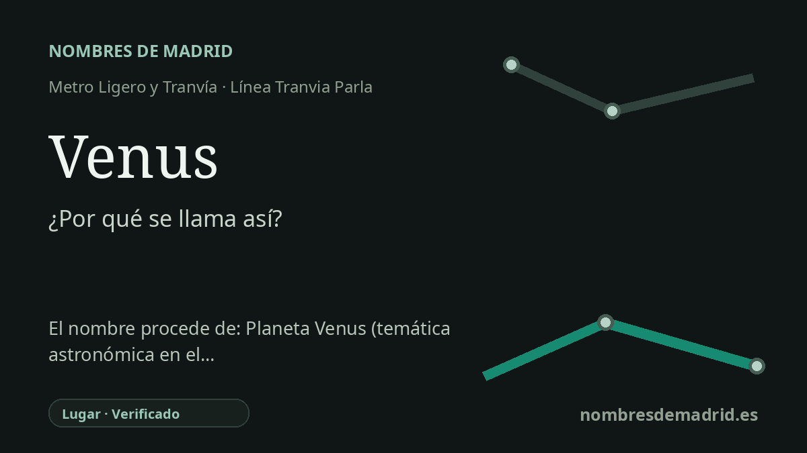

Publicado el · Investigación de Nombres de Madrid · Cómo verificamos cada origen · 7 fuentes consultadas
Respuesta rápida
Venus toma su nombre de la calle Planeta Venus, en Parla Este. El callejero del entorno sigue una clara temática astronómica, con nombres cercanos como avenida de los Planetas, avenida de las Estrellas y avenida del Sistema Solar.
La historia del nombre
Venus no lleva el nombre directo de una persona, de un santo ni de un antiguo topónimo rural. Su nombre de transporte procede de su entorno urbano inmediato: la calle Planeta Venus, en Parla Este. La parada está dividida en Venus Norte y Venus Sur, con el andén norte en la avenida de las Estrellas y el andén sur en la avenida de los Planetas, ambos junto al mismo eje de la calle Venus.
El nombre de fondo es el del planeta Venus. En la astronomía clásica Venus es uno de los planetas visibles a simple vista, y en la tradición romana lleva el nombre de la diosa del amor y la belleza. Esa capa cultural explica que una calle suburbana moderna llamada Planeta Venus suene a la vez científica y mitológica.
Parla Este se desarrolló como una gran expansión oriental de Parla, y el tranvía estuvo vinculado a ese crecimiento. Las fuentes de transporte describen el Tranvía de Parla como una línea circular que sirve al casco urbano, a Parla Este y a la conexión con Cercanías. La documentación del CRTM también presenta el tranvía dentro del periodo de infraestructuras 2003-2007 y como un proyecto estrechamente ligado al desarrollo y a la imagen de la ciudad.
El entorno de la estación hace muy visible el patrón de denominación. El plano callejero del CRTM muestra la calle Planeta Venus junto a calles como Planeta Tierra, Planeta Júpiter, Planeta Saturno, Planeta Urano y Planeta Neptuno, además de la avenida del Sistema Solar, la avenida de los Planetas, la avenida de las Estrellas y la avenida de las Galaxias. Esa es la prueba más fuerte de la temática astronómica que hay detrás del nombre de la parada.
La principal cautela es de precisión. La documentación verifica que el nombre de la parada procede de la calle Planeta Venus y que el barrio utiliza un sistema de nombres astronómicos. No se ha localizado el acuerdo municipal de denominación ni un texto de planeamiento que pruebe la afirmación más concreta de que todas las calles se dispusieron deliberadamente en orden orbital, por lo que esa parte debe tratarse como interpretación y no como hecho documentado.